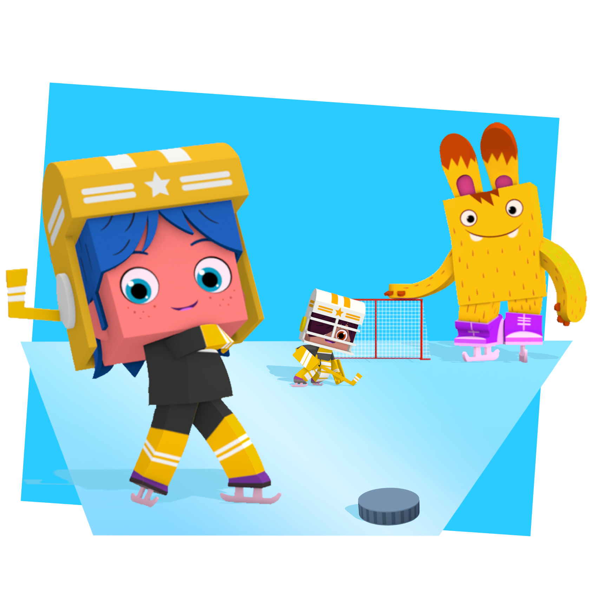

Пешеходные дорожки
В парке есть замечательная Детская площадка с горками, качелями, лесенками и батутом — от этого многообразия голова может пойти кругом.
В парке есть замечательная Детская площадка с горками, качелями, лесенками и батутом — от этого многообразия голова может пойти кругом.
Сегодня Вик не в настроении. И тут тетя Маша приносит большую коробку со старыми карнавальными костюмами. Столько интересного таит эта коробка! Немного переодевания, и Вик легко превращается в археолога, еще немного деталей - и он уже рыцарь, а через минуту - супергерой, готовый на всё!
Дети собираются вместе. Затем водящий, встав лицом к стене, громко считает до 100 (или другого числа). Остальные участники в это время прячутся. Досчитав до конца, водящий идёт искать спрятавшихся. Увидев спрятавшегося, он должен первым добежать до места, откуда он начал поиски, и коснуться рукой стены, произнеся условленные слова и имя того, кого он нашел. Например "Чина-чина, Вик!" Каждый спрятавшийся старается первым сделать то же самое. Следующим водящим является тот из спрятавшихся, кого засалили («зачекали») первым, а если не засалили никого — тот же, что и в прошлый раз.
Йоко играет с тобой в прятки! Найди все 30 мест, куда спрятался Йоко. Нажми на Йоко, как только ты его увидишь.